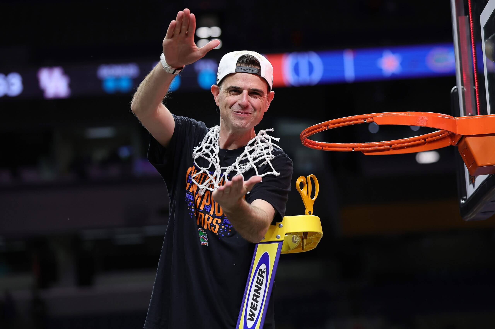
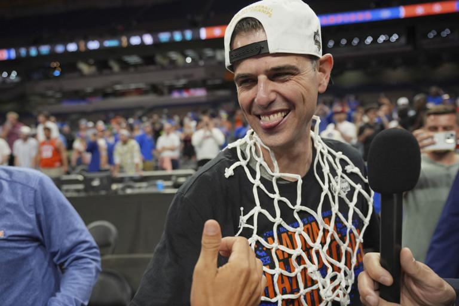

Todd Golden
This is the beautiful, amazing Todd Raymond Golden to the left. He is the current head coach of the Florida Gators Mens Basketball team. This past year he led the Gators to a 36-4 record to win the National Championship. Backstory on is that he is from Phoenix, Arizona and graduated from Sunnyslope High School in 2003 where he played basketball. After high school he played basketball at Saint Mary's College of California. He first started his career at Columbia University where he was a director of basketball operations and then later an assistant coach. After this he became the head coach at the San Francisco Dons Mens Basketball team where he was successful and got better. 3 years after that on March 18th, 2022 he was announced as the Gators next coach.
Some of Todd's accomplishments include :
- SEC Tournament Title
- NCAA Tournaments Title
- Finalist for Naismith Coach of the Year award
Even though I am from Pennslyvania I am very grateful for this man and he will have a special place in my heart ❤️❤️